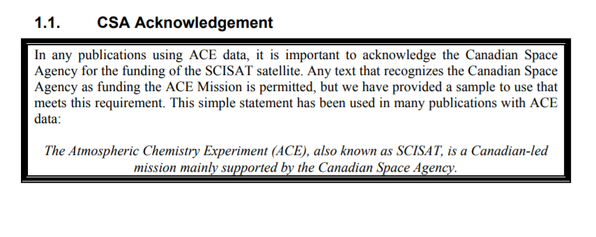

SCISAT Project
The Atmospheric Chemistry Experiment (ACE) is a Canadian satellite mission for remote sensing of the Earth's atmosphere that was launched into a high-inclination (74°), circular low-earth (650 km from the surface) orbit on August 12, 2003 (Bernath et al., 2006). This orbit gives SCISAT coverage of tropical, mid-latitude, and polar regions, ranging from latitudes 85N to 85S, allowing it to study a range of atmospheric processes. The main goal of ACE is to study the atmospheric chemistry and dynamics that affect stratospheric ozone depletion in the Arctic, but ACE measurements are also being used to study ozone depletion in the Antarctic, the relationship between chemistry and climate change, the atmospheric effects of biomass burning, the effects of aerosols and clouds on the global energy balance, and many other areas of atmospheric science.
The primary instrument on SCISAT is a high spectral resolution (0.02 cm-1, corresponding to ± 25 cm maximum optical path difference) infrared Fourier transform spectrometer (ACEFTS), operating over a broad wavenumber range (750-4400 cm-1). As SCISAT orbits the Earth, the ACE-FTS measures sequences of atmospheric absorption spectra during sunrise and sunset. These spectra, measured in the limb viewing geometry with different slant paths and tangent heights are inverted to obtain vertical profiles of temperature, pressure and volume mixing ratios (VMRs) for dozens of trace gases with a vertical resolution of 3-4 km from the cloud tops (or 5 km in the absence of clouds) up to about 120 km. An example sequence of ACE-FTS spectra is shown in Figure 1.
SCISAT also features a UV-visible-NIR spectrophotometer known as Measurement of Aerosol Extinction in the Stratosphere and Troposphere Retrieved by Occultation (ACEMAESTRO). ACE-MAESTRO is a dual optical spectrophotometer that was designed to cover the 285-1030 nm spectral region (MAESTRO now covers 400-1030 nm). It has a vertical resolution of 1-2 km and measures primarily ozone, nitrogen dioxide, and aerosol/cloud extinction using solar occultation (McElroy et al., 2007). In addition, a pair of filtered imagers on board SCISAT (ACE-Imagers) make high signal-tonoise ratio (SNR) measurements at 0.525 and 1.02 m (Gilbert et al., 2007). Atmospheric extinction profiles derived from the imager sunrise and sunset measurements are used for the monitoring of aerosols and clouds and provide an important diagnostic for the variation of the flux over the solar disk (distorted at low altitudes by atmospheric refraction and the presence of clouds).
The ACE-FTS mission concept is based on the ATMOS (Atmospheric Trace MOlecule Spectroscopy) instrument that NASA flew four times (1985, 1992, 1993, and 1994) on the Space Shuttle but the ACE-FTS has been miniaturized by nearly a factor of 10 in mass, power, and volume as compared to ATMOS. With fewer than 400 occultations, ATMOS has made and continues to make valuable contributions to atmospheric science. The ACE instruments, ACE-FTS, ACE-MAESTRO and ACE-Imagers, have measured 25,500 occultations up to September 2010 and measure about 4,500 occultations per year. In combination, these instruments are now providing a wealth of scientific data that will be used to help improve our understanding of processes in the Earth's atmosphere for years to come.
Aknowledgement
